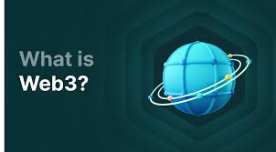

Web 3.0: The Semantic and Decentralized Web
What is Web 3.0?
Web 3.0 is the third generation of internet services for websites and applications. It focuses on using a machine-based understanding of data to provide a data-driven and Semantic Web. It is also increasingly defined by Decentralization, where data is not stored on centralized servers but is distributed across a network.
Core Characteristics
Web 3.0 represents a fundamental shift in how the internet operates:
- Semantic Web: Improving web technologies to create, share, and connect content through search and analysis based on the ability to understand the meaning of words, rather than keywords.
- Decentralization: Information is stored in multiple locations simultaneously, taking power away from giant tech hubs and giving it back to users.
- Blockchain and Crypto: The use of decentralized ledgers and smart contracts to handle transactions and data ownership without intermediaries.
- Artificial Intelligence: Combining semantic capabilities with natural language processing to help computers understand information like humans.

Why it Matters
In Web 3.0, the internet becomes more personalized and secure. Users have more control over their personal data because they own it on a blockchain rather than having it stored in a corporate database. It creates an environment where "the user is the owner," leading to a more open and equitable digital world.